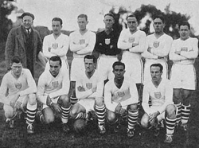
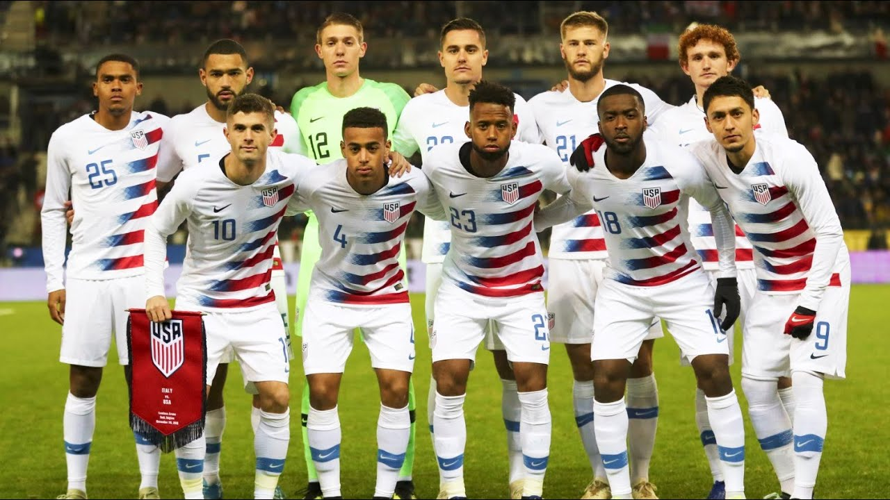

Projeto Multidisciplinar Feira das Nações _ SELEÇÃO DOS ESTADOS UNIDOS
Equipe: 1º Ano A - Robson, Maria Vitoria, João, Luis Gustavo, Marcelo, Lucas
Copa do Mundo
A primeira Copa do Mundo aconteceu em 1930, no Uruguai, e foi resultado de um esforço de anos realizado por pessoas relacionadas à Fifa, com destaque para o papel de Jules Rimet. A realização de uma competição de futebol internacional era algo discutido internamente desde que a Federação foi fundada, em 1904.
A Copa do Mundo, a maior competição de futebol que existe atualmente, é organizada pela Fifa a cada quatro anos ocorrem os jogos.
A Copa do Mundo é um dos maiores eventos esportivos do planeta e, a cada quadriênio, bilhões de pessoas assistem aos jogos realizados. As edições de 2010 (que ocorreu na África do Sul) e 2014 (no Brasil) contaram com cerca de 3,2 bilhões de espectadores, segundo dados compartilhados pela Fifa. A final da Copa do Mundo de 2014 registrou, sozinha, aproximadamente 1 bilhão de espectadores.
A organização de uma Copa do Mundo também gera gastos consideráveis – muito em parte por conta das altas exigências da Fifa.
Estados Unidos
Na Copa do Mundo FIFA de 1930, os EUA terminaram em terceiro, batendo a Bélgica por 3-0 no Estádio Gran Parque Central em Montevidéu, Uruguai. A partida ocorreu simultaneamente com uma outra em outra parte da cidade nos Estádio Pocitos, onde a França derrotou o México.
No próximo jogo, os Estados Unidos ganharam uma vitória por 3-0 sobre o Paraguai. Por muitos anos, a FIFA creditou Bert Patenaude com os primeiro e terceiro gols e seu companheiro de equipe Tom Florie com o segundo. Outras fontes descrevem o segundo gol como tendo sido marcado por Patenaude ou pelo paraguaio Ramon Gonzales. Em novembro de 2006, a FIFA anunciou que havia aceitado evidências de "vários historiadores e fãs de futebol" que Patenaude marcou os três gols, e foi assim a primeira pessoa a marcar um hat-trick em um torneio de Copa do Mundo.
Tendo alcançado as semifinais com as duas vitórias, o lado americano perdeu de 6-1 para a Argentina. Usando os registros gerais do torneio, a FIFA creditou os EUA com um terceiro lugar, à frente do companheiro semi-finalista Iugoslávia. É o melhor resultado de qualquer equipe de fora da CONMEBOL e da UEFA, as confederações sul-americana e europeia, respectivamente.
Devido a FIFA não querer interferência com a recém-fundada Copa do Mundo, nenhum torneio oficial foi a campo no Jogos Olímpicos de Verão de 1932. A FIFA afirmou que o torneio não seria popular nos Estados Unidos, por isso não teria custo suficiente para auxiliar na execução do torneio durante tempos difíceis na economia. Como resultado, um torneio informal foi organizado incluindo rivais locais com os Estados Unidos terminando em primeiro, seguido por México e Canadá. O Torneio Olímpico foi restabelecido nos Jogos Olímpicos de Verão de 1936.
A Copa de 2014 teve gastos de aproximadamente R$ 8 bilhões somente com estádios, ao passo que a edição de 2010 registrou aproximados R$ 4 bilhões.
A escolha da nação-sede é determinada em eleições feitas pela própria Fifa.
Referencia:https://pt.wikipedia.org/wiki/Sele%C3%A7%C3%A3o_de_Futebol_dos_Estados_Unidos